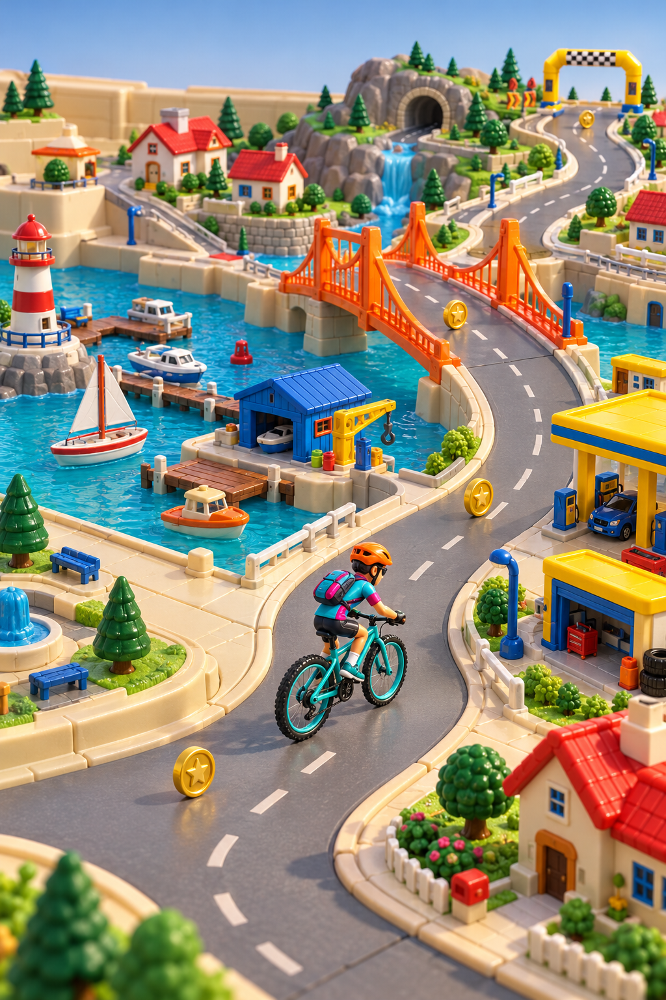

<!doctype html><html lang="fr"><meta charset="utf-8"><meta name="viewport" content="width=device-width,initial-scale=1"><title>Micro Rider · Studio</title><style>
*{box-sizing:border-box}:root{color-scheme:dark;font-family:Arial,sans-serif;background:#090f1c;color:#f5efdf}body{margin:0;background:radial-gradient(at 25% 45%,#223453,#090f1c 65%)}main{max-width:1440px;margin:auto;min-height:100svh;display:grid;grid-template-columns:1.2fr 1fr;gap:30px;align-items:center;padding:20px 32px}.machine{position:relative;height:94svh;aspect-ratio:2/3;max-width:100%;justify-self:center;container-type:inline-size}.cab{width:100%;height:100%;position:absolute;inset:0;object-fit:fill;border-radius:12px}.screen{position:absolute;overflow:hidden;background:#020c17;border-radius:5%;box-shadow:inset 0 0 10px #000}.scene{width:100%;height:100%;object-fit:cover}.hud{position:absolute;inset:0 0 auto;display:grid;grid-template-columns:repeat(4,1fr);padding:5% 3% 10%;gap:3%;background:linear-gradient(#04111fea,transparent);text-align:center;font-family:monospace;text-shadow:0 0 4px #000}.hud small{display:block;font-size:1.05cqw;color:#e6f1ec}.hud strong{font-size:2.9cqw;color:var(--accent,#ffdf70);white-space:nowrap}.hud em{display:block;font-size:1cqw;font-style:normal;color:#fff}.panel{position:absolute;border:1px solid #7779;border-radius:7%;padding:2px;background:linear-gradient(130deg,#3e484f,#090f14 12%,#060a10 90%,#78808a);box-shadow:0 2px 4px #000b}.panel svg{display:block;width:100%;height:100%;background:#050e11;border-radius:5%}h1{font-size:32px;margin:8px 0 10px;letter-spacing:-1px}.eyebrow{color:#ffd66b;font-size:10px;letter-spacing:3px}.intro{color:#a7b7d0;font-size:13px;line-height:1.5}fieldset{border:0;padding:0;margin:20px 0}legend{font-size:11px;font-weight:bold;letter-spacing:2px;color:#b5c7e1;margin-bottom:10px}.options{display:flex;gap:7px;flex-wrap:wrap}button{font:inherit;cursor:pointer;color:#d5dff1;background:#ffffff07;border:1px solid #ffffff22;border-radius:8px;padding:9px 11px;font-size:12px}button:hover{background:#ffffff15}button[aria-pressed=true]{color:#ffe3a1;border-color:#edc067;background:#edc06718}.game-options{display:grid;grid-template-columns:repeat(3,1fr);gap:7px}.game{padding:5px;font-size:10px;text-align:left}.game img{width:100%;height:64px;object-fit:cover;border-radius:4px;display:block;margin-bottom:6px}.telemetry{padding:14px 16px;border:1px solid #ffffff20;background:#050c1866;border-radius:12px}.row{display:grid;grid-template-columns:80px 1fr 66px;align-items:center;gap:12px;margin:11px 0;font-size:12px}.row output{text-align:right;color:#ffe0a0;font-family:monospace}input{width:100%;accent-color:#eeb45d;cursor:pointer}.actions{display:flex;gap:9px;align-items:center;margin-top:14px;flex-wrap:wrap}.note{font-size:11px;color:#8296b5;line-height:1.6}a{color:#ffd476;font-size:12px}.machine[data-style=steampunk] .panel{background:#8a6130;border-color:#ddbf70}.machine[data-style=steampunk] .panel svg{background:#27190e}.machine[data-style=giscard] .panel{background:#4b3524;border-color:#bf9869}.machine[data-style=neon] .panel{border-color:#e646d2;box-shadow:0 0 7px #e646d266}button:focus-visible,input:focus-visible,a:focus-visible{outline:3px solid #ffd476;outline-offset:3px}@media(max-width:800px){main{grid-template-columns:1fr;padding:12px 18px;gap:20px}.machine{height:68svh}aside{max-width:600px;width:100%;margin:auto}.game img{height:55px}h1{font-size:28px}}@media(prefers-reduced-motion:reduce){*{scroll-behavior:auto}}
.machine[data-style=original] #h-hr{color:#ffad73}.machine[data-style=original] #h-watts{color:#ffe875}.machine[data-style=original] #h-rpm{color:#ffb451}.machine[data-style=original] #h-speed{color:#d494ff}
.mode-control{display:flex;align-items:center;gap:13px;margin:16px 0 20px;padding:12px 14px;background:#060c15;border:1px solid #ffffff22;border-radius:10px}.mode-control span{font-size:12px}.mode-control small{display:block;color:#8fa4c3;font-size:10px;margin-top:4px}.rocker{position:relative;width:43px;height:51px;padding:0;flex-shrink:0;border:4px solid #242930;border-radius:6px;background:linear-gradient(#ff8648,#eb431b 49%,#9b240d 51%,#dc3c18);box-shadow:0 2px 3px #000,inset 0 1px 2px #ffce8a;transform:perspective(110px) rotateX(-12deg);color:#ffe9bb;font:bold 13px monospace;display:flex;flex-direction:column;justify-content:space-around;align-items:center}.rocker[aria-checked=true]{background:linear-gradient(#ca3213,#f15e26 49%,#fd7739 51%,#b52b0e);transform:perspective(110px) rotateX(12deg);border-color:#353b43;box-shadow:0 0 12px #ff681c33}.machine{overflow:hidden}.cab-slice{position:absolute;left:0;width:100%;overflow:hidden;pointer-events:none}.cab-slice img{position:absolute;width:100%;max-width:none;left:0}.play-mode .cab{visibility:hidden}.play-mode .cab-slice{display:block}.cab-slice{display:none}.play-mode #screen{border-radius:2.5%}.play-mode .hud{padding-top:4%}.mode-control button:focus-visible{outline:3px solid #ffd476;outline-offset:4px}
.cab{visibility:hidden}.cab-slice{display:block}.panel{pointer-events:none}.machine[data-style=original] .panel{transform:perspective(350px) rotateX(24deg);transform-origin:center center;box-shadow:0 2px 2px #000a,inset 0 0 0 1px #63717d}.machine[data-style=cassette] .panel,.machine[data-style=steampunk] .panel{padding:0;border:0;border-radius:0;background:none;box-shadow:none}.machine[data-style=cassette] .panel svg,.machine[data-style=steampunk] .panel svg{background:none;border-radius:0}.cab-slice svg{display:block;width:100%;height:100%}
.cab,.play-mode .cab{visibility:visible}.cab-slice,.play-mode .cab-slice{display:none}
.machine .panel,.machine[data-style] .panel{inset:0!important;width:100%!important;height:100%!important;padding:0!important;border:0!important;border-radius:0!important;background:none!important;box-shadow:none!important;transform:none!important;pointer-events:none}.machine .panel svg,.machine[data-style] .panel svg{width:100%;height:100%;background:none!important;border-radius:0;filter:none}.instrument-presets{display:flex;gap:6px;flex-wrap:wrap;margin-top:12px}.instrument-presets button{padding:6px 8px;font-size:10px}.telemetry{margin-bottom:12px}
</style><main><div class="machine" data-style="original"><div class="screen" id="screen"><div class="hud" aria-label="Mesures simulées"><div><small>CŒUR</small><strong id="h-hr">142</strong><em>BPM</em></div><div><small>POWER</small><strong id="h-watts">215</strong><em>W</em></div><div><small>CADENCE</small><strong id="h-rpm">84</strong><em>RPM</em></div><div><small>SPEED</small><strong id="h-speed">26,4</strong><em>KM/H</em></div></div></div><div class="panel" id="panel"><svg viewBox="0 0 360 160" aria-label="Instruments animés" role="img" id="instruments"></svg></div></div><aside><span class="eyebrow">MICRO RIDER · STUDIO VISUEL</span><h1>Compose ta machine.</h1><p class="intro">Une borne, un monde, ton rythme. Change chaque élément indépendamment et fais réagir les instruments.</p><div class="mode-control"><button class="rocker" id="mode-toggle" role="switch" aria-checked="false" aria-label="Mode jeu grand écran"><span>I</span><span>O</span></button><span id="mode-label">Vue entière<small>Borne complète · menus et chargement</small></span></div><fieldset><legend>01 · LA BORNE</legend><div class="options" id="cabinets"></div></fieldset><fieldset><legend>02 · LE MONDE</legend><div class="game-options" id="games"></div></fieldset><fieldset class="telemetry"><legend>03 · LES INSTRUMENTS</legend><div id="sliders"></div><div class="instrument-presets" role="group" aria-label="Contrôler les instruments"><button data-preset="fixed" aria-pressed="true">Aperçu fixe</button><button data-preset="off" aria-pressed="false">Éteint</button><button data-preset="0" aria-pressed="false">0 %</button><button data-preset="0.5" aria-pressed="false">50 %</button><button data-preset="1" aria-pressed="false">100 %</button></div><div class="actions"><button id="demo" aria-pressed="false">▶ Animer les curseurs</button><button id="reset">Réinitialiser</button></div><p class="note" id="state" aria-live="polite">Mode manuel · déplace les curseurs.</p></fieldset><p class="note">Exploration graphique : décors fixes, mesures simulées.<br>Les indications sont dessinées dans les instruments de chaque borne.</p><a href="verification/index.html" target="_blank" rel="noopener">Voir les instruments en détail ↗</a><br><br><a href="../archive/versions-de-travail/galerie.html">Archives · versions de travail</a></aside></main><script src="instruments.js"></script><script>
const cabinets=[{id:'original',name:'Années 90',src:'assets/bornes/annees-90.png',screen:[24.2,15.7,52.7,47.6],panel:[39.8,65.45,17.9,7.15],accent:'#ffe36b'},{id:'neon',name:'Néon',src:'assets/bornes/neon.png',screen:[27,12.8,46.2,33.6],panel:[38.8,48.9,24.1,7.2],accent:'#60ecff'},{id:'cassette',name:'Cassette',src:'assets/bornes/cassette.png',screen:[20.8,10.9,58.3,31.3],panel:[31.7,45.1,40,7.4],accent:'#78ffd0'},{id:'giscard',name:'Giscard-punk',src:'assets/bornes/giscard.png',screen:[24.1,14.5,51.7,26.2],panel:[34.1,45.2,33.9,6.7],accent:'#ffc366'},{id:'steampunk',name:'Steampunk',src:'assets/bornes/steampunk.png',screen:[24.5,12.8,51.3,33.8],panel:[35.6,48.7,29.8,6.7],accent:'#ffe2a3'}];
const games=[['Col alpin','assets/jeux/col-alpin.png'],['Montagne en briques','assets/jeux/montagne-briques.png'],['Ville miniature','assets/jeux/ville-miniature.png'],['Ville · vue du dessus','assets/jeux/ville-dessus.png'],['Ville · 3D urbaine','assets/jeux/ville-3d.png'],['Parc · isométrique','assets/jeux/parc-isometrique.png'],['Table · course miniature','assets/jeux/table-miniature.png'],['L’île aux dinosaures','assets/jeux/ile-dinosaures.png'],['Aventures spatiales','assets/jeux/aventures-spatiales.png']];
const metrics=[{id:'hr',name:'Cœur',unit:'bpm',max:200,value:142},{id:'watts',name:'Puissance',unit:'W',max:500,value:215},{id:'rpm',name:'Cadence',unit:'rpm',max:140,value:84},{id:'speed',name:'Vitesse',unit:'km/h',max:60,value:26.4}];let style=cabinets[0],game=2,timer=null,t=0,playMode=false,instrumentPower=true;const $=s=>document.querySelector(s),ns='http://www.w3.org/2000/svg',colors=['#29b6f6','#83d24b','#ffe52f','#ff9c27','#ff3b35','#c91850','#b966ff'];
function box(el,v){['left','top','width','height'].forEach((key,i)=>el.style[key]=v[i]+'%')}
function stop(){clearInterval(timer);timer=null;$('#demo').textContent='▶ Animer les curseurs';$('#demo').setAttribute('aria-pressed','false');$('#state').textContent='Mode manuel · déplace les curseurs.'}
function svg(tag,attrs,parent=$('#instruments')){const el=document.createElementNS(ns,tag);Object.entries(attrs).forEach(([k,v])=>el.setAttribute(k,v));parent.append(el);return el}function point(x,y,r,a){return [x+r*Math.cos(a*Math.PI/180),y+r*Math.sin(a*Math.PI/180)]}function sector(x,y,r,a,b){const p=point(x,y,r,a),q=point(x,y,r,b),u=point(x,y,r-7,b),v=point(x,y,r-7,a);return `M${p}A${r},${r} 0 0 1 ${q}L${u}A${r-7},${r-7} 0 0 0 ${v}Z`}
function draw(){const data=Object.fromEntries(metrics.map(m=>[m.id,m.value]));MicroInstruments.render($('#instruments'),style.id,playMode?'jeu':'menu',data,t,instrumentPower);}
function update(){metrics.forEach(m=>{const val=m.id==='speed'?m.value.toFixed(1).replace('.',','):Math.round(m.value);$('#h-'+m.id).textContent=val;$('#range-'+m.id).value=m.value;$('#out-'+m.id).textContent=val+' '+m.unit});draw()}
// Rebuild the cabinet from three image slices: intact header, stretched bezel,
// and intact controls. The lower apron is excluded in game mode.
const controlCuts={original:[63.5,76.2],neon:[47,59],cassette:[43.2,62],giscard:[42.5,60],steampunk:[47.1,62.5]};
const paintedLayouts={
original:{screen:[24.2,15.7,52.7,65.5],panel:[39.8,84.8,17.9,7.15]},
neon:{screen:[27,12.8,46.2,60.2],panel:[38.8,76.1,24.1,7.2]},
cassette:{screen:[20.8,10.9,58.3,63.4],panel:[0,75.7,100,18.8]},
giscard:{screen:[24.1,14.5,51.7,57.5],panel:[34.1,77.9,33.9,6.7]},
steampunk:{screen:[24.5,12.8,51.3,64.3],panel:[0,77.6,100,15.4]}
};
function applyLayout(){const layout=playMode?paintedLayouts[style.id]:style;$('.machine').classList.toggle('play-mode',playMode);const key=style.id==='original'?'annees-90':style.id;$('#cab').src='assets/bornes-propres/'+key+'-'+(playMode?'jeu':'menu')+'.png';box($('#screen'),layout.screen);draw();}
$('#mode-toggle').addEventListener('click',()=>{playMode=!playMode;$('#mode-toggle').setAttribute('aria-checked',String(playMode));$('#mode-label').innerHTML=playMode?'Mode jeu<small>Grand écran · commandes conservées</small>':'Vue entière<small>Borne complète · menus et chargement</small>';applyLayout()});
function chooseStyle(c){style=c;$('#cab').src=c.src;$('#cab').alt='Borne '+c.name;$('.machine').dataset.style=c.id;$('.machine').style.setProperty('--accent',c.accent);applyLayout();document.querySelectorAll('[data-cab]').forEach(b=>b.setAttribute('aria-pressed',String(b.dataset.cab===c.id)));draw()}
function chooseGame(i){game=i;$('#scene').src=games[i][1];$('#scene').alt=games[i][0];document.querySelectorAll('[data-game]').forEach(b=>b.setAttribute('aria-pressed',String(Number(b.dataset.game)===i)))}
cabinets.forEach(c=>{const b=document.createElement('button');b.textContent=c.name;b.dataset.cab=c.id;b.addEventListener('click',()=>chooseStyle(c));$('#cabinets').append(b)});games.forEach((g,i)=>{const b=document.createElement('button');b.className='game';b.dataset.game=i;const im=document.createElement('img');im.src=g[1];im.alt='';b.append(im,document.createTextNode(g[0]));b.addEventListener('click',()=>chooseGame(i));$('#games').append(b)});metrics.forEach(m=>{const row=document.createElement('div');row.className='row';row.innerHTML=`<label for="range-${m.id}">${m.name}</label><input id="range-${m.id}" type="range" min="0" max="${m.max}" step="${m.id==='speed'?.1:1}" value="${m.value}"><output id="out-${m.id}" for="range-${m.id}"></output>`;$('#sliders').append(row);$('#range-'+m.id).addEventListener('input',e=>{stop();instrumentPower=true;clearPresets();m.value=Number(e.target.value);update()})});
function clearPresets(){document.querySelectorAll('[data-preset]').forEach(b=>b.setAttribute('aria-pressed','false'))}
document.querySelectorAll('[data-preset]').forEach(b=>b.addEventListener('click',()=>{stop();clearPresets();b.setAttribute('aria-pressed','true');const p=b.dataset.preset;instrumentPower=p!=='off';metrics.forEach((m,i)=>m.value=p==='fixed'?[142,215,84,26.4][i]:p==='off'?0:m.max*Number(p));$('#state').textContent=p==='off'?'Instruments éteints · artwork sans indication variable':p==='fixed'?'Aperçu fixe · valeurs de démonstration':'Contrôle des instruments · '+Math.round(Number(p)*100)+' %';update()}));
$('#demo').addEventListener('click',()=>{if(timer){stop();return}instrumentPower=true;clearPresets();$('#demo').textContent='Ⅱ Figer les curseurs';$('#demo').setAttribute('aria-pressed','true');$('#state').textContent='Démonstration · mesures simulées';timer=setInterval(()=>{t+=.12;metrics.forEach((m,i)=>m.value=m.max*(.5+.43*Math.sin(t+i*.36)));update()},160)});$('#reset').addEventListener('click',()=>{stop();instrumentPower=true;clearPresets();[142,215,84,26.4].forEach((v,i)=>metrics[i].value=v);update()});chooseStyle(style);chooseGame(game);update();
</script></html>
